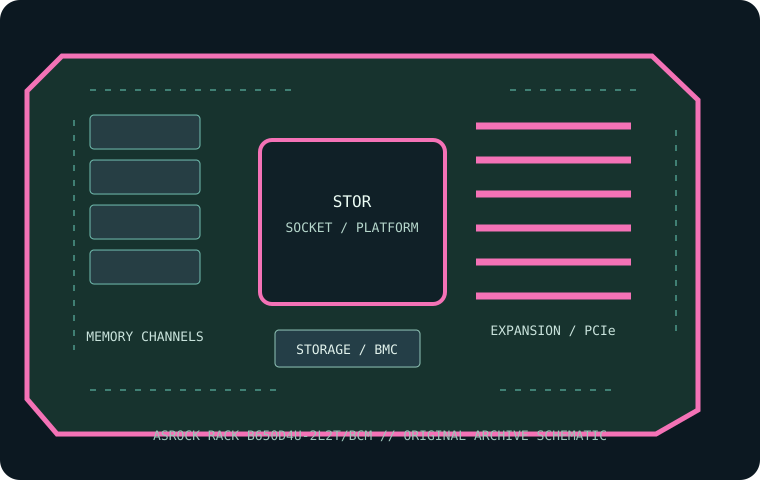

[ INDIVIDUAL COMPONENT // MOTHERBOARDS ]
ASRock Rack B650D4U-2L2T/BCM
Micro-ATX AM5 server board combining ECC UDIMM support, dual 10GbE and an onboard IPMI BMC. This record identifies the stated model/revision; confirm the PCB label and use the matching vendor support files.

REVISION WARNING: Similar model names, board revisions and firmware may differ in CPU support, lane routing or connectors. Identify the silkscreen and assembly code before installation or firmware updates.
Specifications
| Catalog subcategory | Workstation and server boards |
|---|---|
| Exact model / era | ASRock Rack B650D4U-2L2T/BCM — Micro-ATX AM5 server board combining ECC UDIMM support, dual 10GbE and an onboard IPMI BMC. (2024) |
| CPU and socket / SoC | One Socket AM5 processor from the supported AMD EPYC 4004/4005 or Ryzen 7000/8000/9000 families, as allowed by the board CPU list and BIOS. |
| Chipset / platform | AMD B650E chipset/platform. |
| Memory and ECC | Four DDR5 ECC or non-ECC UDIMM sockets; dual-channel. Maximum validated capacity and data rate depend on CPU, BIOS and DIMM population; registered DIMMs are not supported. |
| PCIe and form factor | Micro-ATX, 9.6 × 9.6 in (24.4 × 24.4 cm); one PCIe 5.0 x16, one PCIe 5.0 x4 and one PCIe 4.0 x1 slot as listed by ASRock Rack. |
| Storage | Four SATA 6 Gb/s ports and one M.2 PCIe 5.0 x4 socket; confirm shared lanes and supported M.2 sizes in the manual. |
| BMC and networking | ASPEED AST2600 BMC with dedicated management/IPMI LAN; dual Broadcom 10GbE data ports and Intel 1GbE ports. |
Compatibility and revision notes
AM5 EPYC 4004/4005 and supported Ryzen models require the matching CPU table and BIOS. Use UDIMMs, not RDIMMs; ECC operation depends on CPU/DIMM support. Check heatsink, BIOS, memory population, mATX chassis and lane sharing before reuse.
Socket type, connector shape, chipset branding and CPU family alone do not establish compatibility. Confirm the exact CPU support list, minimum BIOS, ECC/DIMM type and population, shared PCIe/storage lanes, power inputs and dimensions in the linked model-specific vendor documentation.
Preservation and repair
Record the board revision, serial label, BIOS and BMC versions, MAC addresses, attached risers/cables and test conditions before servicing. Use the vendor's socket procedure, ESD-safe handling and correct chassis airflow; do not cross-flash firmware from a related SKU.
Photograph PCB labels, connector condition and accessories before cleaning. Keep BMC access credentials in secure inventory, and never power the board with loose conductive hardware beneath it.
Sources & further reading
- ASRock Rack B650D4U-2L2T/BCM — manufacturer specifications and product referencePrimary product reference for platform, board configuration and feature summary.
- ASRock Rack B650D4U-2L2T/BCM — manufacturer support, manual and firmware resourcesUse the exact revision-specific manual, CPU support list and firmware package before service.
Manufacturer model-specific documentation takes precedence. Confirm details for the exact printed board revision.